<div class="container-fluid know-us">
    <div class="row">
        <div class="col-md-3">
            <!-- Tabs nav -->
            <div class="nav flex-column nav-pills nav-pills-custom" id="v-pills-tab" role="tablist"
                aria-orientation="vertical"><br>
                <a class="nav-link mb-3 p-3 shadow active" id="v-pills-welcome-tab" data-bs-toggle="pill"
                    data-bs-target="#v-pills-welcome" role="tab" aria-controls="v-pills-welcome" aria-selected="true">
                    <span class="font-weight-bold small text-uppercase">Welcome to Sri Balaji Society
                    </span></a>

                <a class="nav-link mb-3 p-3 shadow" id="v-pills-group-tab" data-bs-toggle="pill"
                    data-bs-target="#v-pills-group" role="tab" aria-controls="v-pills-group" aria-selected="false">
                    <span class="font-weight-bold small text-uppercase"> Sri Balaji Society Group
                    </span></a>

                <a class="nav-link mb-3 p-3 shadow" id="v-pills-founder-tab" data-bs-toggle="pill"
                    data-bs-target="#v-pills-founder" role="tab" aria-controls="v-pills-founder" aria-selected="false">
                    <span class="font-weight-bold small text-uppercase"> The Founder
                    </span></a>

                <a class="nav-link mb-3 p-3 shadow" id="v-pills-message-tab" data-bs-toggle="pill"
                    data-bs-target="#v-pills-message" role="tab" aria-controls="v-pills-message" aria-selected="false">
                    <span class="font-weight-bold small text-uppercase"> President’s Message
                    </span></a>
                <a class="nav-link mb-3 p-3 shadow" id="v-pills-team-tab" data-bs-toggle="pill"
                    data-bs-target="#v-pills-team" role="tab" aria-controls="v-pills-team" aria-selected="false">

                    <span class="font-weight-bold small text-uppercase">
                        Management Team
                    </span></a>
                <a class="nav-link mb-3 p-3 shadow" id="v-pills-blessings-tab" data-bs-toggle="pill"
                    data-bs-target="#v-pills-blessings" role="tab" aria-controls="v-pills-blessings"
                    aria-selected="false">

                    <span class="font-weight-bold small text-uppercase">
                        Stalwarts Blessings
                    </span></a>
                <a class="nav-link mb-3 p-3 shadow" id="v-pills-social-tab" data-bs-toggle="pill"
                    data-bs-target="#v-pills-social" role="tab" aria-controls="v-pills-social" aria-selected="false">

                    <span class="font-weight-bold small text-uppercase">
                        Sri Balaji Society for Social
                    </span></a>
                <a class="nav-link mb-3 p-3 shadow" id="v-pills-approval-tab" data-bs-toggle="pill"
                    data-bs-target="#v-pills-approval" role="tab" aria-controls="v-pills-approval"
                    aria-selected="false">

                    <span class="font-weight-bold small text-uppercase">
                        AICTE Approvals
                    </span></a>
                <a class="nav-link mb-3 p-3 shadow" id="v-pills-aiu-tab" data-bs-toggle="pill"
                    data-bs-target="#v-pills-aiu" role="tab" aria-controls="v-pills-aiu" aria-selected="false">

                    <span class="font-weight-bold small text-uppercase">
                        AIU Equivalence to MBA</span></a>
            </div>
        </div>


        <div class="col-md-9">
            <!-- Tabs content -->
            <div class="tab-content" id="v-pills-tabContent">
                <div class="tab-pane fade shadow rounded bg-white show active p-5" id="v-pills-welcome" role="tabpanel"
                    aria-labelledby="v-pills-welcome-tab">
                    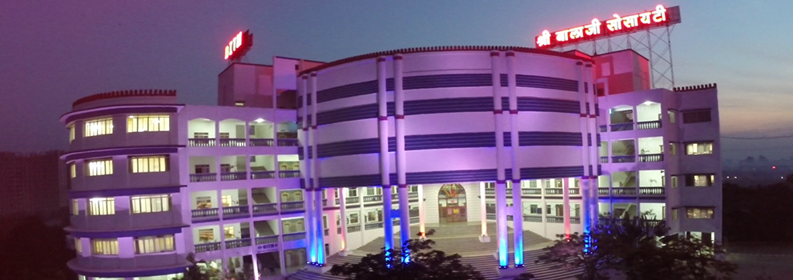<br><br>
                    <h4 class="font-italic mb-4">WELCOME TO SRI BALAJI SOCIETY</h4>
                    <p class="font-italic text-muted mb-2">India is going through an Industrial Revolution. Many
                        multinationals, transnational & global companies are investing in the Indian economy and Indian
                        companies are going global. In the globalised business environment demand for well trained work
                        force is increasing. Not withstanding the upheavals in the global market, India is still poised
                        to keep her growing phase as can be seen in the economic growth rate compared to the other
                        countries in the World. Right person to the right job with right attitude is the demand of the
                        industry.</p>

                    <h3>Sri Balaji Society, Pune functions like a Corporate Entity</h3>
                    <p class="font-italic text-muted mb-2">Sri Balaji Society, Pune/ Management institutes/ Colleges are
                        run on the lines of a corporate
                        entity. The Directors of the Management Institutes function like CEO’s. Students are treated as
                        'Student Managers' with due respect, love, concern, dignity and authority. Those who perform are
                        rewarded. Delinquent students are dealt with disciplinarily. Discipline, Dedication and
                        Determination are our ‘Mantras’. The ability to perform and grow towards a definite career in
                        any part of the country are the qualities expected from every 'Student Manager'. Here 'Time' is
                        treated as the most precious resource. Our classes generally commence at early morning hours say
                        08:00 am or 09:00 am and may go on even beyond 07:00 pm with minimum breaks. We also hold late
                        night classes/examinations as and when required.</p>
                    <h4 class="font-italic mb-4">THE BEGINNING</h4>
                    <div class="row">
                        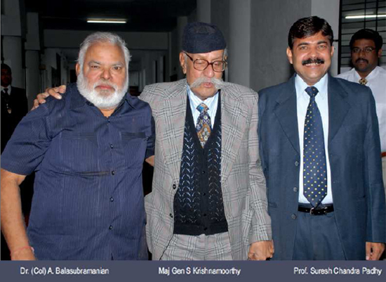
                        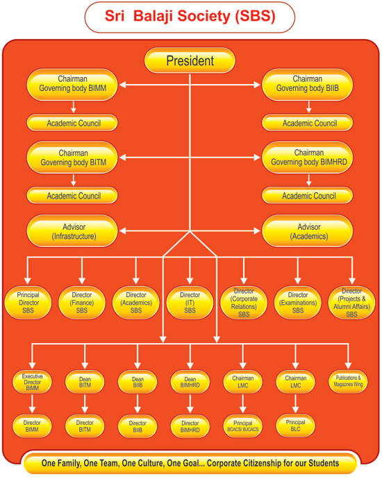
                    </div>
                </div>

                <div class="tab-pane fade shadow rounded bg-white p-5" id="v-pills-group" role="tabpanel"
                    aria-labelledby="v-pills-group-tab">
                    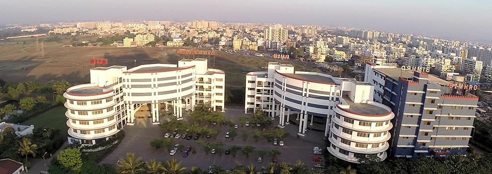<br><br>
                    <h4 class="font-italic mb-4">SRI BALAJI SOCIETY GROUP
                    </h4>
                    <div class="row">
                        <div class="col">
                            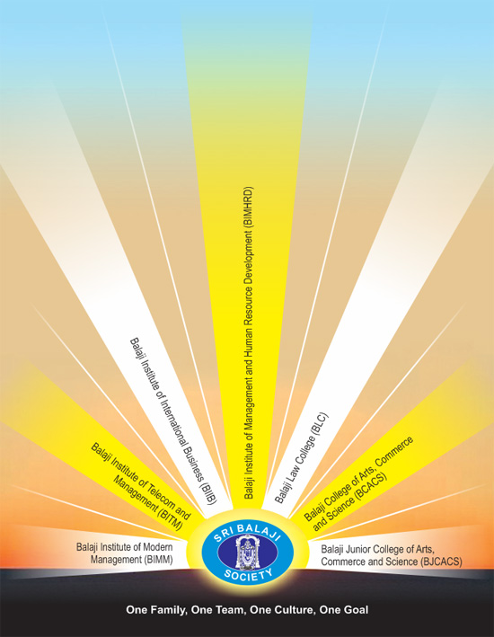
                        </div>
                        <div class="col">
                            <strong style="color: #EC4F00;">Sri Balaji Society,</strong> Pune is a charitable trust
                            established under The Bombay Public Trust Act, 1950. The autonomous management Institutes
                            and Colleges managed by the trust are as under:<br>
                            <span class="txt11normal"><a href="http://www.bimmpune.com" target="_blank">Balaji Institute
                                    of Modern Management (BIMM)- www.bimmpune.com </a></span><br>
                            <a href="http://www.bitmpune.com" target="_blank">Balaji Institute of Telecom and Management
                                (BITM)
                                - www.bitmpune.com </a><br>
                            <a href="http://www.biibpune.com" target="_blank">Balaji Institute of International Business
                                (BIIB)
                                - www.biibpune.com</a><br>
                            <a href="http://www.bimhrdpune.com" target="_blank">Balaji Institute of Management and Human
                                Resource
                                Development (BIMHRD) - www.bimhrdpune.com</a> <br>
                            <a href="http://www.balajilaw.com" target="_blank">Balaji
                                Law College (BLC) - www.balajilaw.com</a><a href="http://www.bimhrdpune.com"
                                target="_blank"></a> (Approved by Bar Council of India &amp; Affiliated to University of
                            Pune)<br>
                            <a href="http://www.bcacspune.com" target="_blank">Balaji
                                College of Arts, Commerce and Science (BCACS)
                                – www.bcacspune.com </a> (Affiliated to University of Pune) <br>
                            <a href="http://www.bcacspune.com" target="_blank">Balaji
                                Junior College of Arts, Commerce and Science
                                (BJCACS)</a> (Approved by Govt. of Maharashtra) <br>

                            <p align="left" style="margin-top: 3%;"><span class="txt6">Admission
                                    Cell - Sri Balaji Society, Pune</span><br>
                                Survey
                                No. 55/2-7, Tathawade, <br>
                                Off
                                Pune-Mumbai Highway, <br>
                                Pune-411 033, Maharashtra (India)<br>
                                <strong class="font14 black-t">Tel </strong>: +91-20-6674 1235/ 3063 1236<br>
                                <strong class="font14 black-t">Fax</strong> : +91-20-6674 1234 <br>
                                <strong class="font14 black-t">E-mail
                                    :</strong><a href="mailto:admissions@balajisociety.org">
                                    admissions@balajisociety.org </a><br>
                                <strong class="font14 black-t">Url
                                    :</strong><a href="http://sribalajisocietypune.org/">
                                    http://sribalajisocietypune.org/ </a>
                            </p>
                            <p><span class="txt4"><u style="color: #EC4F00;">Note</u></span>: The society does not
                                accept any donation or capitation fee against admissions. </p>
                        </div>
                    </div>
                </div>

                <div class="tab-pane fade shadow rounded bg-white p-5" id="v-pills-founder" role="tabpanel"
                    aria-labelledby="v-pills-founder-tab">
                    <br><br>
                    <h4 class="font-italic mb-4 text-center">THE FOUNDER
                    </h4>
                    <div class="row justify-content-center">
                        <div class="col text-center">
                            <iframe width="420" height="315" src="https://youtube.com/embed/7MMhuqtImo0"></iframe>
                        </div>
                    </div><br>
                    <p class="font-italic text-muted mb-2"><b>Dr. (Col.) A. Balasubramanian</b> is a triple Post
                        Graduate and
                        rare personality known for his creative approach and making history in the field of education.
                        He is a classic example of courage, commitment and intimate relationship with the corporate
                        world. He still claims to be a student, was a soldier for nearly 28 years, is a trainer, a
                        consultant, an author of five books in management, a writer with more than 100 short stories and
                        two novels to his credit, he is the one who conceived the very idea of creating the first Post
                        Graduate Management Institute in India exclusively for the Defence Personnel and their
                        Dependents. He is the first Indian from Armed Forces in the history of India to be conferred the
                        Honorary Rank of Colonel after retirement. Much later cricket icons Kapil Dev, Mahinder Singh
                        Dhoni and Sachin Tendulkar were conferred the honorary rank of Lt Col and Group Captain. Thus he
                        has many feathers in his cap and is known for his creative, successful and bold experiments in
                        management education ventures.</p>

                    <p class="font-italic text-muted mb-2">He is an educationist who is clearly ahead of his time and
                        has time and again demonstrated an
                        uncanny ability to foresee the trends of the future within the education industry as well as in
                        the corporate world. He has introduced many innovative ideas in Management Education of which
                        many have become norms and style of management education.</p>

                    <p class="font-italic text-muted mb-2">Dr. (Col.) A. Balasubramanian was born in a very poor
                        farmer's family in South India where
                        education was a scarce product. He ran away from home to join an orphanage to complete education
                        upto High School. Later he joined the Indian Army and served there for about 28 years and
                        retired as a Subedar. During his service with Army, he acquired three post graduate degrees with
                        flying colors. His scholarly attributes and commitment to students has made him as one amongst
                        the leading lights in the field of education in India. Education is enhancer of knowledge, skill
                        and attitude. It is the energy of a nation. It is a source of discipline, dedication and
                        determination to achieve the goal. He keep on saying. He is the founder of the prestigious Sri
                        Balaji Society, Pune (www.balajisociety.org) . He is running four prestigious management
                        institutes namely Balaji Institute of Modern Management (BIMM), Balaji Institute of Telecom &
                        Management (BITM), Balaji Institute of International Business (BIIB) and Balaji Institute of
                        Management & HRD (BIMHRD).</p>

                    <p class="font-italic text-muted mb-2">1000 Post Graduates in Management specializing in Sales &
                        Marketing Management, Finance
                        Management, Operations & Supply Chain Management, Human Resources Management, Telecom
                        Management, International Business, Systems Management are passed out from all these four
                        management institutes and these Post Graduates are well placed in the corporate world globally.
                        Many of them are working in Gulf countries including Muscat and Dubai. The vision and mission
                        statement of Dr. Bala is 'Problems are opportunities and Be Selfish'. The other colleges run by
                        him are Balaji College of Arts, Science & Commerce (BCACS), Balaji Junior College of Arts,
                        Commerce & Science (BJCACS) and Balaji Law College (BLC) providing education to undergraduate
                        students. He is also the Executive Director of BIMM and Dean of BITM, BIIB and BIMHRD. As a
                        genuine philanthropist, he has generously donated lakhs of rupees for the educational purposes
                        for which he was recently conferred an award in an All India conference.</p>

                    <p class="font-italic text-muted mb-2">Sri Balaji Society, Pune means quality and commitment to the
                        students' community. We believe
                        that each and every student has the potential to be groomed to have a successful corporate
                        career. Converting the right candidates to the right jobs through right training and development
                        has always been the goal of our Society. We are deeply pleased to state that we have achieved
                        the same to a larger extent as can be seen from the Track-Record of campus placements of our
                        management institutes.</p>
                    <div class="row">
                        <div class="col">
                            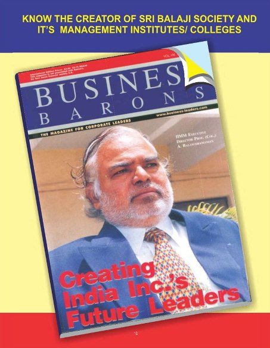
                        </div>
                        <div class="col">
                            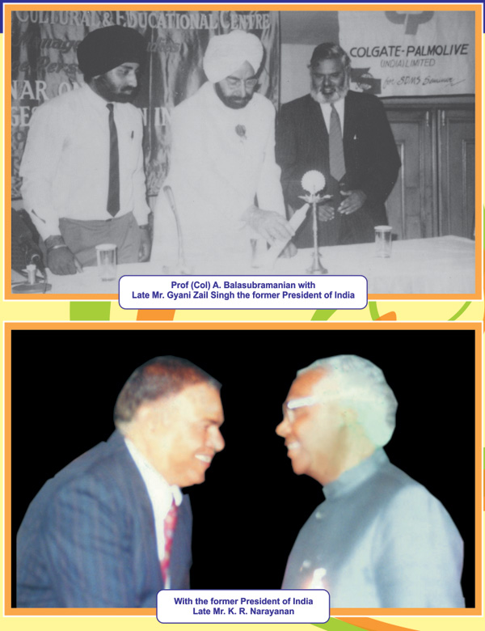
                        </div>
                    </div>
                    <div class="row">
                        <div class="col">
                            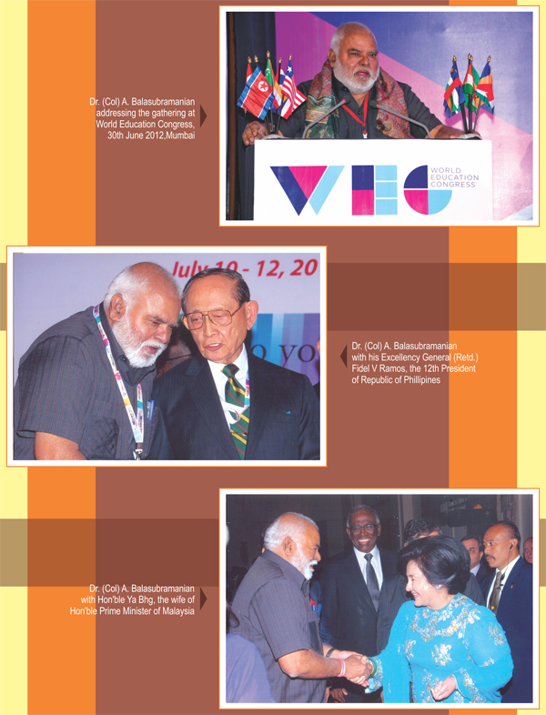
                        </div>
                        <div class="col">
                            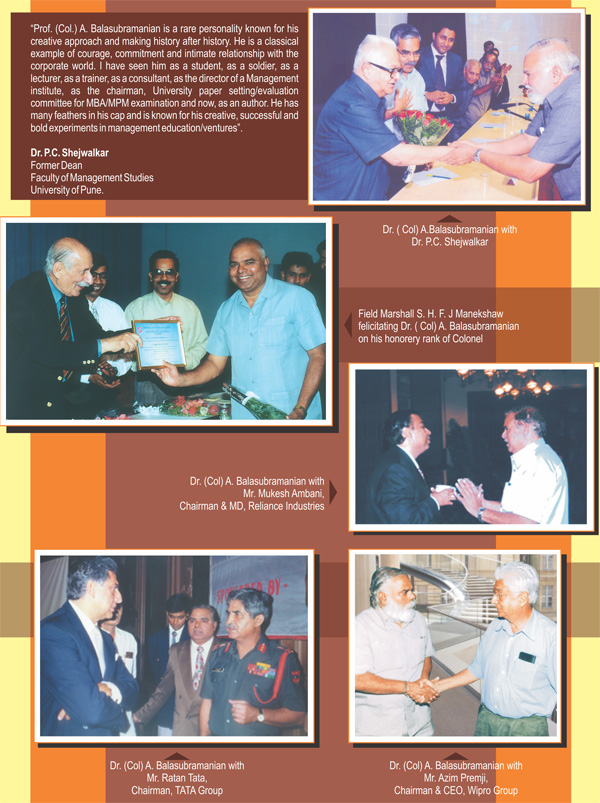
                        </div>
                    </div>
                    <div class="row">
                        <div class="col">
                            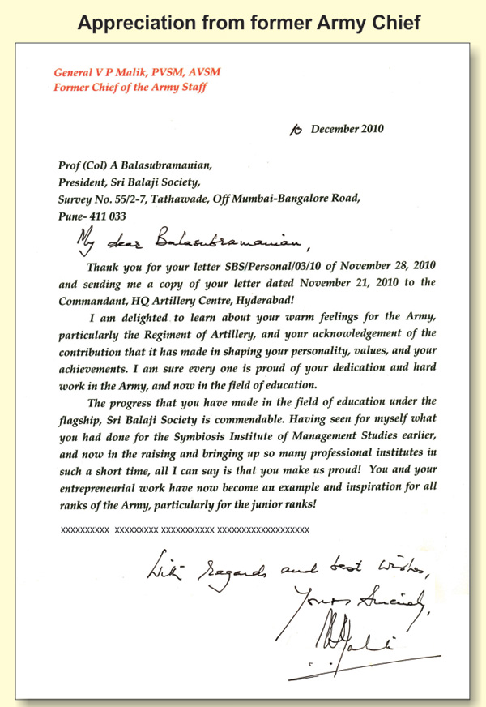
                        </div>
                        <div class="col">
                            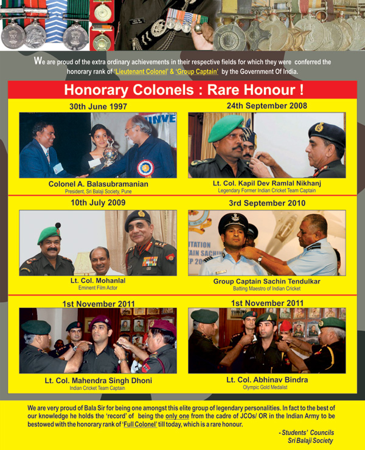
                        </div>
                    </div>
                </div>

                <div class="tab-pane fade shadow rounded bg-white p-5" id="v-pills-message" role="tabpanel"
                    aria-labelledby="v-pills-message-tab">
                    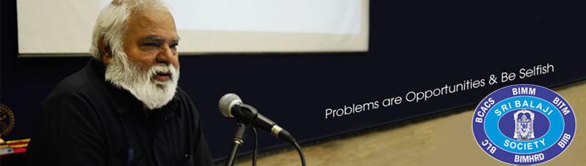<br><br>
                    <h4 class="font-italic mb-4">Confirm booking</h4>
                    <p class="font-italic text-muted mb-2">Sri Balaji Society, Pune means quality and commitment to the
                        students' community. We believe that each and every student has the potential to be groomed to
                        have a successful corporate career. Converting the right candidates to the right jobs through
                        right training and development has always been the goal of our Society. We are deeply pleased to
                        state that we have achieved the same to a larger extent as can be seen from the Track-Record of
                        campus placements of our management institutes.</p>
                    <p class="font-italic text-muted mb-2">
                        We are proud to state that, within an existence of 15 years Sri Balaji Society is known not only
                        for the best infrastructure but also for the best faculties. Sri Balaji Society is already
                        ranked as one amongst top Three for ‘visiting faculties’ in India by ‘Business India’ dated 17th
                        Oct. 2010, which means active involvement of corporate stalwarts in imparting instructions and
                        practical exposure to students about the industry. The has also ranked Balaji Institute of
                        Modern Management (BIMM), formerly known as Indian Institute of Modern Management (IIMM) - the
                        first B-School of Sri Balaji Society, as one amongst the Top five B-Schools for ‘Marketing’
                        specialisation in the country. BIMM is also ranked as one amongst the top 13 private B-schools
                        in the country, top 28 B-schools in the country and one amongst top 2 B-school in Pune by
                        Outlook magazine dated 1st October, 2012.BIMM is ranked as one amongst 4th Business School in
                        India for the return on investment(ROI), (Source OUTLOOK OCT 6, 2014.)
                    </p>
                    <p class="font-italic text-muted mb-2">
                        Balaji Institute of Telecom & Management (BITM) is ranked as 46th Top B -School in India.(
                        Source: Times & Nielson Survey, Times Top B School Survey, 31st March 2014.Times of India).
                        Balaji Institute of International Business (BIIB) is ranked as (A+++) B- School in India
                        (Source: Go Getter May,2014) . Balaji Institute of Management and Human Resource Development
                        (BIMHRD) Pune is ranked 42nd Top B -School in India.(Source: Times Nielson Survey, Times Top B
                        School Survey , 31st March 2014.Times of India). BITM, BIIB, BIMHRD are also one amongst the
                        best B-Schools ranked (A++) by ‘Business India’ in the country and enjoys very good campus
                        placements. All these four institutes viz. BIMM, BITM, BIIB and BIMHRD are approved by AICTE. I
                        am proud to record here that more than 1000 students from all these four Management Institutes
                        of Sri Balaji Society have been placed in the Industry by every year with good compensation
                        package. The compensation package varies according to the company and competencies of each
                        individual. This track record has encouraged us to initiate more bold and innovative training
                        methods with active support from the corporate stalwarts and the Industry who have recognized
                        our sincerity and seriousness to the cause of growth and development of our students who are
                        excelling themselves in the industry and are proving to be the fast-trackers.
                    </p>
                    <p class="font-italic text-muted mb-2">
                        The excellent faculties, conducive environment, good infrastructure and stimulating atmosphere
                        in our campus enable students to dream and work hard to achieve their goals. It should be noted
                        that being creative, experimenting and unconventional group of B-Schools, we keep on updating
                        our course-curriculum and this has increased the efficiency and effectiveness of our students.
                        We treat time as the most precious resource. Therefore, classes-exercises-examinations may be
                        scheduled around the clock, for longer hours, and hence the students are required to go through
                        rigorous and hectic grooming/ training process for 365 days. We don't believe in the concept of
                        holidays as two-years is a short period to impart all the skills and knowledge competencies.
                        Therefore, only those who are medically fit to undergo rigorous and a hectic schedule should
                        seek admission. Positive attitude is the other requisite of our Society.
                    </p>
                    <p class="font-italic text-muted mb-2">
                        Sri Balaji Society (SBS) functions on the lines of Industry and University. The Directors of the
                        Society are the pillars of the society and are devoted to the welfare, growth efficiency,
                        excellence of
                    </p>
                    <p class="font-italic text-muted mb-2">
                        education and training in each of the Management Institutes on the lines of a Corporate
                        Headquarters. The Directors of the Institutes are scholars and great leaders in their own right
                        and work hand in hand with the Directors of the Society as one family. Each director is
                        empowered to take decisions within the framework of rules and regulations laid down by Sri
                        Balaji Society. The rules and regulations of Sri Balaji Society are framed by a High-Power
                        Committee which comprises of, all the Directors and Advisors of Sri Balaji Society. Each
                        institute is also having its own sub-committee comprising of the Director and Faculties of the
                        institute. This interdependent and independent stand of each Institute, enables us to grow
                        together by drawing the expertise, energy and resources from all the sources of the Society.
                    </p>
                    <p class="font-italic text-muted mb-2">
                        We have a common prospectus for all the four management institutes of SBS, because everything is
                        common in SBS. Common culture, common grooming, common training methods, common examinations and
                        common facilities which ultimately ensures that the quality standards in all the institutes are
                        maintained at par and no one is in a disadvantageous position. The unity-in-diversity approach
                        is helping us in a big way. The students are the biggest beneficiaries as is seen in the real
                        test i.e , in the campus placements season. Most of the companies are seeing the students of all
                        the four institutes who fulfill the qualitative requirements. Only a few of the companies are
                        visiting particular institutes of Sri Balaji Society. These couple of companies, about 10 or so,
                        too are being apprised to see all the institutes.
                    </p>
                    <p class="font-italic text-muted mb-2">
                        Admissions to all the courses run by BIMM/ BITM/ BIIB/ BIMHRD are on merit, based on a Combined
                        Admission Process, which will be hel dAhmedabad, Bathinda, Bangalore, Bhopal, Bhubaneshwar,
                        Chandigarh, Chennai, Dehradun, Delhi, Goa, Guwahati, Hyderabad, Indore ,Jaipur, Jammu, Kochi,
                        Kolkata, Kota, Lucknow, Mumbai, Nagpur, Patna, Pune, Raipur, Ranchi, Varanasi, Belgaum,
                        Coimbatore, Gangtok, Gwalior, Jabalpur, Trivandrum and Vijayawada. However, we reserve the right
                        to cancel any centre if warranted due to any contingency.
                    </p>
                    <p class="font-italic text-muted mb-2">
                        We accept CAT/MAT/XAT/CMAT scores. We don't believe in cut off score as we feel that Sri Balaji
                        Society Model of selection has proved the test of time as it covers all the requisites including
                        personality and other relevant factors. We give due weightage to all these relevant factors.
                        This can be seen from the track record of our campus placements. Our selection process, in the
                        selection centres involves Group Discussions, Essay Writing and Personal Interviews. It may be
                        mentioned here that, IIM's are not involved in our selection or grooming methods. All these
                        scores of entrance exam, group discussion, essay and interview are given due weightage and final
                        merit-list is drawn based on which courses/institutes are allotted to the applicants. Therefore,
                        students can buy one prospectus and can apply to any one or to all the courses offered in all
                        the management institutes of SBS through one common application form. During the selections, the
                        expert panels will study the suitability of the candidates for the course applied by them and
                        then allot either the same course applied by the candidate or other alternate suitable course in
                        any of the institutes although the student will initially be considered according to the
                        preference given by the student. In case, the student does not stand in the Merit-list for the
                        course applied according to preferences he/she will be considered for other courses offered by
                        any of the institutes. We assume that fresh graduates are not well-equipped to know about the
                        job-contents of various courses and therefore, it is our duty to match the candidate to the
                        right course and according to the merit-list.
                    </p>
                    <p class="font-italic text-muted mb-2">
                        The course curriculum for each course has been designed in consultation with corporate stalwarts
                        and will be implemented as hither-to-fore. It may be mentioned that our course-contents are

                        designed and bench-marked with the best B-Schools. Personality development of students is a
                        critical requirement for the growth and development of students. Therefore, a lot of work-shops
                        and co-curricular activities are conducted regularly by the society in all the institutes to
                        ensure that the students are immensely benefitted. Guest lectures, Management Games and Seminars
                        are integral parts of the intensive training provided to our students. Very Senior Trainers and
                        Corporate Stalwarts from the industry regularly visit us for the same.
                    </p>
                    <p class="font-italic text-muted mb-2">
                        Discipline, Dedication and Determination are our Core-Values. While we adopt a paternalistic
                        approach in matters of welfare and mentoring, we deal with the in-disciplined students with an
                        iron hand. SBS is run on the lines of an industry and rules and regulations are considered
                        supreme. Therefore, you are requested to go through the instructions published in this
                        prospectus and to make your choice. We can assure you that your admission in any of our
                        B-schools would mean the right step to ultimately land up in corporate careers.
                    </p>
                    <p class="font-italic text-muted mb-2">
                        <b>Welcome - Welcome To Sri Balaji Society, Pune.<br>
                            Yours sincerely</b>

                        Dr. (Col) A. Balasubramanian<br>
                        <b>Executive Director</b> BIMM & Dean BITM, BIIB and BIMHRD<br>
                        Chairman Campus Placement, President, Sri Balaji Society, Pune.
                    </p>
                </div>
                <!-- Team section -->
                <div class="tab-pane fade shadow rounded bg-white p-3" id="v-pills-team" role="tabpanel"
                    aria-labelledby="v-pills-team-tab">
                    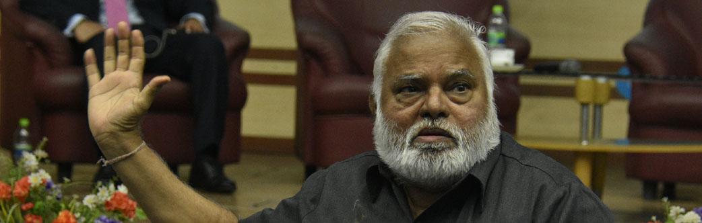<br><br>
                    <h4 class="font-italic mb-4">TOP BRASS OF SRI BALAJI SOCIETY</h4>
                    <div class="row mb-2">
                        <div class="col">
                            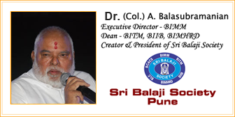
                        </div>
                    </div>
                    <app-loader *ngIf="loading"></app-loader>
                    <div class="row" *ngIf="!loading">
                        <div class="col-xl-4 col-lg-4 col-md-4 col-sm-6 my-2" *ngFor="let team of teamData">
                            <div class="card teamData p-2">
                                <div class="row">
                                  <div class="col-md-4 align-self-center">
                                    
                                  </div>
                                  <div class="col-md-8 text-center">
                                    <div class="card-body p-0">
                                      <h4 class="card-title fw-bold mb-1">{{team?.name}}</h4>
                                      <p class="card-text mb-1">{{team?.designation}}</p>
                                      
                                      <p class="card-text institute-name text-capitalize">{{team?.institute_name}}</p>
                                    </div>
                                  </div>
                                </div>
                              </div>
                        </div>
                    </div>
                </div>
                <!-- Team section End -->
                <div class="tab-pane fade shadow rounded bg-white p-5" id="v-pills-blessings" role="tabpanel"
                    aria-labelledby="v-pills-blessings-tab">
                    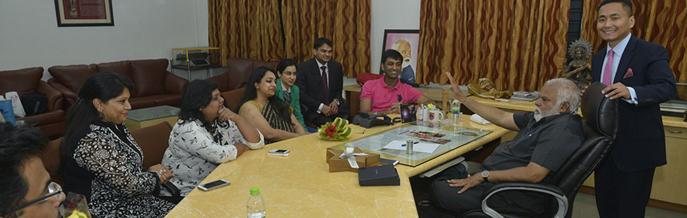<br><br>
                    <h4 class="font-italic mb-4">STALWARTS BLESSINGS</h4>
                    <div class="row">
                        <div class="col text-center">
                            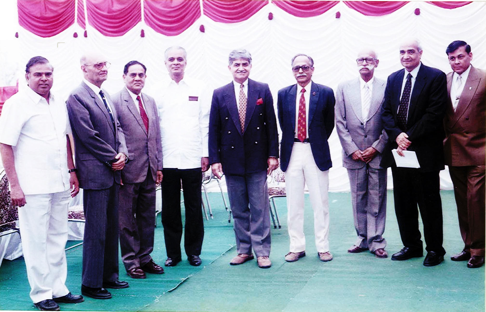<br>
                            The History:<br>
                            Blessings to Sri Balaji Society, Pune on 13th Feb, 2000<br>
                            (Reproduced from the Prospectus 2001)<br>
                        </div>
                        <div class="col">
                            <p class="font-italic text-muted mb-2">On 13th february, 2000 seen from right to left are
                                Gen. S. Padmanaabhan, Chief of the Army
                                Staff, Mr. L. C. Singh, CEO, Nihilent Technologies; Maj Gen S Krishnamurthy
                                (Regd)-Chairman,
                                Governing Body BIMM; Lt Gen B T Pandit, Former Adjutant General; General V P Malik COAS;
                                Dr.
                                S B Majumdar, Founder Director & President Symbiosis; Admiral J G Nadkarni, Former Chief
                                of
                                Naval Staff; Air Chief Marshal H. Moolgavkar, Former Chief of Air Staff & Dr. (Col.) A.
                                Balasubramanian, Executive Director & President Sri Balaji Society, Pune.</p>
                        </div>
                    </div>
                    <br>
                    <hr>
                    <div class="row">
                        <div class="col">
                            1. Mr. R. Sundara Raghavan (Director-Portfolio Management, Future Knowledge Services
                            Ltd.)<br>
                            2. Mr. Gopal Mahadevan (Executive VP & CFO, Thermax India Ltd)<br>
                            3. Mr. L. C. Jhamb (Director, Elo Matic India Ltd),<br>
                            4. Mr. Nandakishore Rathi (Director, Campus Relations Oracle India Pvt. Ltd.)<br>
                            5. Mr. S. Varadarajan (EVP & Chief HR Office, Quatrro BPO Solutions (P) Ltd.)<br>
                            6. Mr. Jagdish Avchat (Director Delivery, Tech Mahindra Ltd.)<br>
                            7. Dr. (Col) A. Balasubramanian (President Sri Balaji Society, Pune)<br>
                            8. Mr. D. R. Kurane (President, Human Capital Management, YES bank Ltd.)<br>
                            9. Mr. Ravi Santhanam (Circle CEO, Maharashtra & Goa, Reliance Communications Ltd.)<br>
                            10. Mr. Thothathri Raman (Consulting Editor, Business India)<br>
                            11. Mr. Om Prakash Subbarao (Director, Consulting Practice India Pvt. Ltd.)<br>
                            12. Mr. S. Balasubramanian (CFO, Zensar Technologies)<br>
                            13. Lt. Gen. V. M. Patil ( PVSM, AVSM Chairman, Governing Body, BIMM)<br>
                            14. Mr. K. Ravi Chandran (Head-HR, Future Knowledge Services Ltd.)<br>
                        </div>
                        <div class="col">
                            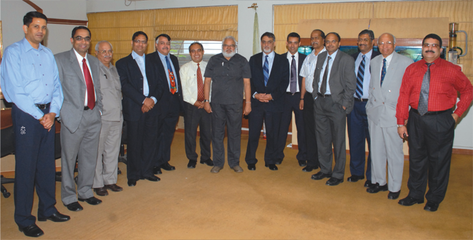
                        </div>
                    </div>
                    <br>  <hr>
                    <div class="row">
                        <div class="col text-center">
                            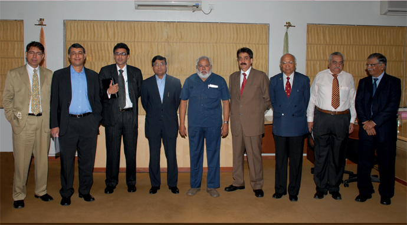<br>
                            The History:<br>
                            Mentors at our Induction Programme: First day for the freshers in the Campus, Batch
                            2010-12<br>
                            Corporate Stalwarts from all over India<br><br>
                        </div>
                        <div class="col">
                            1. Mr. Yogesh Bijlani, Country Head & Genearal Manager- APAC, Talenity<br>
                            2. Mr. Sonjay Anand , CFO Tech Mahindra<br>
                            3. Dr. Ajoy Kumar CEO, Max Neeman International<br>
                            4. Dr.C.S. Rao, Chairman, Intel Technology India Pvt. Ltd.<br>
                            5. Dr. (Col) A. Balasubramanian<br>
                            6. Mr. Rajeev Bhadauria, President HR,Reliance Infrastructure Ltd.<br>
                            7. Lt. Gen. V.M. Patil Chairman Governing Body BIMM<br>
                            8. Mr. Akshay Joshi, Whole Time Director, BOB Capital Markets Ltd.<br>
                            9. Mr. Pradeep Madhav, MD, STCI Primary Dealer Ltd., Marathon Emperor<br>
                        </div>
                    </div>
                </div>
                <div class="tab-pane fade shadow rounded bg-white p-5" id="v-pills-social" role="tabpanel"
                    aria-labelledby="v-pills-social-tab">
                    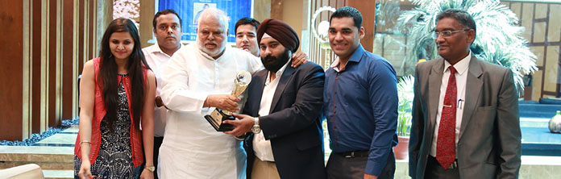<br><br>
                    <h4 class="font-italic mb-4">SRI BALAJI SOCIETY, PUNE FOR SOCIAL</h4>
                    <div class="row">
                        <div class="col">
                            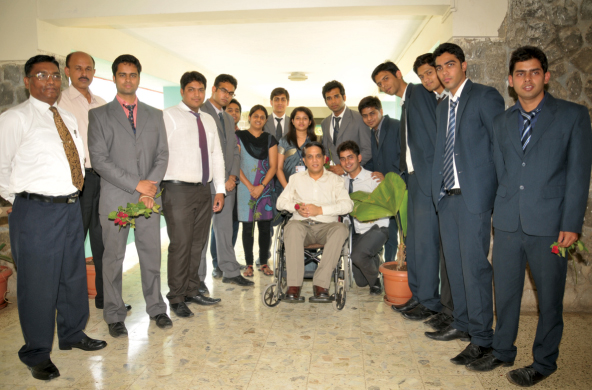<br>
                            <p class="font-italic text-muted mb-2 cust-spac">
                                Students Donate Rs 2,00000/- (Two Lakhs). Paraplegic Rehabilitation Centre, Kirkee.
                                A rehabilitation Centre meant for the after care and rehabilitation of personnel's
                                of Defence forces of India who are medically boarded out / retired
                                form service due to Spinal Cord Injury while serving the Nation.
                            </p>
                        </div>
                        <div class="col">
                            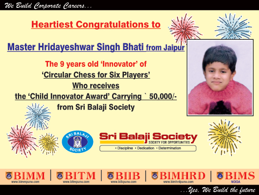<br>
                            <p class="font-italic text-muted mb-2 cust-spac">
                                Master Hridayeshwar Singh Bhati from Jaipur, The 9 years old 'Innovator'
                                of 'Circular Chess for Six Players' Who receives the
                                'Child Innovator Award'
                                Carrying ` 50,000/- from Sri Balaji Society, Pune
                            </p>
                        </div>
                    </div>
                    <div class="row">
                        <div class="col">
                            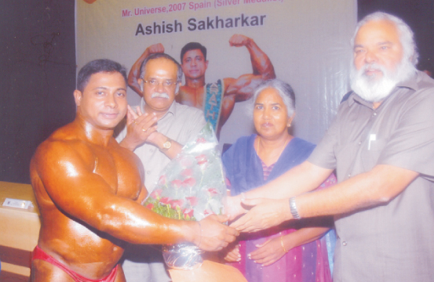<br>
                            <p class="font-italic text-muted mb-2 cust-spac">
                                Mr. Ashish Sakharkar, Silver Medalist, Mr. Universe- 2007,
                                Spain was presented a cheque of Rs. 1 Lac by students of BIIB.

                            </p>
                        </div>
                        <div class="col">
                            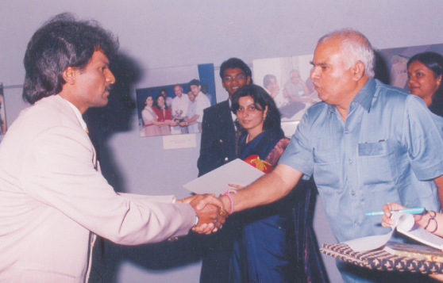<br>
                            <p class="font-italic text-muted mb-2 cust-spac">
                                Mr. Dhanraj Pillai, Former Captain, Indian Hockey
                                Team was presented a cheque of Rs. 1 Lac by students of BIMM
                            </p>
                        </div>
                    </div>
                    <div class="row">
                        <div class="col">
                            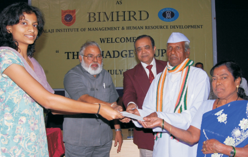<br>
                            <p class="font-italic text-muted mb-2 cust-spac">
                                Mr. and Mrs. Ghatge, were presented a
                                cheque of Rs. 1 Lac by students of BIMHRD


                            </p>
                        </div>
                        <div class="col">
                            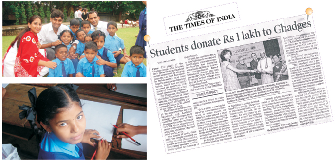<br>
                            <p class="font-italic text-muted mb-2 cust-spac">
                                Special efforts are taken at Sri Balaji Society, Pune to create a greater social
                                consciousness among the would-be managers by giving them a chance to actually take up
                                social causes. At Sri Balaji Society, Pune students of batch 2006-08 initiated NAMAN - A
                                salute to Indians, where they got together to help the needy & underprivileged children.
                                This year the students of Sri Balaji Society, Pune felicitated Mr Sadanand (83) and Mrs
                                Lilavati Ghadge (70 years old) , Marathi folk (Powda) performers and Guinnes record
                                holders for their innovative communication tool- 'rail natya'. Mr. and Mrs. Ghadge are
                                victims of state neglect and have been reduced to poverty. However the students of Sri
                                Balaji Society, Pune got together, collected voluntary funds and presented a cheque of
                                Rs 1,00, 348 to the couple. Activities such as these define the social awareness of Sri
                                Balaji Society, Pune students, reinforcing our commitment towards upholding our social
                                values.
                            </p>
                        </div>
                    </div>
                </div>
                <div class="tab-pane fade shadow rounded bg-white p-5" id="v-pills-approval" role="tabpanel"
                    aria-labelledby="v-pills-approval-tab">
                    <br><br>
                    <h4 class="font-italic mb-4">AICTE APPROVALS</h4>
                    <table class="table table-bordered">
                        <tbody>
                            <tr>
                                <th colspan="5">Batch Approval Letter</th>
                                <th align="left" rowspan="2">Present Status </th>
                                <th rowspan="2">Management Institutes </th>
                            </tr>
                            <tr>
                                <!--   <th> 2011-13</th>-->
                                <th>2012-14</th>
                                <th>2013-15</th>
                                <th>2014-15</th>

                                <th>2015-16</th>
                                <th>2016-17</th>

                            </tr>
                            <tr>
                                <!--    <td width="11%"><a target="_blank" href="aicte/BIMM-2011-13-AICTE-Approval.pdf">BIMM Letter </a></td>-->
                                <td width="11%"><a target="_blank"
                                        href="http://www.sribalajisocietypune.org/aicte/BIMM-2012-14-AICTE-Approval.pdf">BIMM
                                        Letter </a></td>
                                <td width="11%"><a target="_blank"
                                        href="http://www.sribalajisocietypune.org/aicte/BIMM-2013-15-AICTE-Approval.PDF">BIMM
                                        Letter </a></td>
                                <td width="11%"><a target="_blank"
                                        href="http://www.sribalajisocietypune.org/aicte/2014-15/EOA-Report-2014-15-BIMM.PDF">BIMM
                                        Letter </a></td>
                                <td width="11%"><a target="_blank"
                                        href="http://www.sribalajisocietypune.org/aicte/2015-16/EOA_Report_2015-16-BIMM.PDF">BIMM
                                        Letter </a></td>
                                <td width="11%"><a target="_blank"
                                        href="http://www.sribalajisocietypune.org/aicte/2016-17/EOA_Report_2016-17-BIMM.PDF"
                                        class="orange-t">BIMM Letter </a></td>
                                <td width="14%"><a target="_blank"
                                        href="http://www.aicte-india.org/excel/29jun/maharash.html">AICTE Weblink</a>
                                </td>
                                <td><a target="_blank" href="http://www.bimmpune.com">Balaji Institute of Modern
                                        Management (BIMM)</a></td>
                            </tr>
                            <tr>
                                <!--  <td><a target="_blank" href="aicte/BITM-2011-13-AICTE-Approval.pdf">BITM Letter </a></td>-->
                                <td><a target="_blank"
                                        href="http://www.sribalajisocietypune.org/aicte/BITM-2012-14-AICTE-Approval.pdf">BITM
                                        Letter </a></td>
                                <td><a target="_blank"
                                        href="http://www.sribalajisocietypune.org/aicte/BITM-2013-15-AICTE-Approval.PDF">BITM
                                        Letter </a></td>
                                <td><a target="_blank"
                                        href="http://www.sribalajisocietypune.org/aicte/2014-15/EOA-Report-2014-15-BITM.PDF">BITM
                                        Letter </a></td>
                                <td><a target="_blank"
                                        href="http://www.sribalajisocietypune.org/aicte/2015-16/EOA_Report_2015-16-BITM.PDF">BITM
                                        Letter </a></td>
                                <td><a target="_blank"
                                        href="http://www.sribalajisocietypune.org/aicte/2016-17/EOA Report 2016-17-BITM.PDF"
                                        class="orange-t">BITM Letter </a></td>

                                <td><a target="_blank" href="http://www.aicte-india.org/excel/29jun/maharash.html">AICTE
                                        Weblink</a></td>
                                <td><a target="_blank" href="http://www.bitmpune.com">Balaji Institute of Telecom and
                                        Management (BITM)</a></td>
                            </tr>
                            <tr>
                                <!--  <td><a target="_blank" href="aicte/BIIB-2011-13-AICTE-Approval.pdf">BIIB Letter </a></td>-->
                                <td><a target="_blank"
                                        href="http://www.sribalajisocietypune.org/aicte/BIIB-2012-14-AICTE-Approval.pdf">BIIB
                                        Letter </a></td>
                                <td><a target="_blank"
                                        href="http://www.sribalajisocietypune.org/aicte/BIIB-2013-15-AICTE-Approval.PDF">BIIB
                                        Letter </a></td>
                                <td><a target="_blank"
                                        href="http://www.sribalajisocietypune.org/aicte/2014-15/EOA-Report-2014-15-BIIB.PDF">BIIB
                                        Letter </a></td>
                                <td><a target="_blank"
                                        href="http://www.sribalajisocietypune.org/aicte/2015-16/EOA_Report_2015-16-BIIB.PDF">BIIB
                                        Letter </a></td>
                                <td><a target="_blank"
                                        href="http://www.sribalajisocietypune.org/aicte/2016-17/EOA_Report_2016-17_BIIB.PDF"
                                        class="orange-t">BIIB Letter </a></td>
                                <td><a target="_blank" href="http://www.aicte-india.org/excel/29jun/maharash.html">AICTE
                                        Weblink</a></td>
                                <td><a target="_blank" href="http://www.biibpune.com">Balaji Institute of International
                                        Business (BIIB)</a></td>
                            </tr>
                            <tr>
                                <!--                <td><a target="_blank" href="aicte/BIMHRD-2011-13-AICTE-Approval.pdf">BIMHRD Letter </a></td>-->
                                <td><a target="_blank"
                                        href="http://www.sribalajisocietypune.org/aicte/BIMHRD-2012-14-AICTE-Approval.pdf">BIMHRD
                                        Letter </a></td>
                                <td><a target="_blank"
                                        href="http://www.sribalajisocietypune.org/aicte/BIMHRD-2013-15-AICTE-Approval.PDF">BIMHRD
                                        Letter </a></td>
                                <td><a target="_blank"
                                        href="http://www.sribalajisocietypune.org/aicte/2014-15/EOA-Report-2014-15-BIMHRD.PDF">BIMHRD
                                        Letter </a></td>
                                <td><a target="_blank"
                                        href="http://www.sribalajisocietypune.org/aicte/2015-16/EOA_Report_2015-16-BIMHRD.PDF">BIMHRD
                                        Letter </a></td>
                                <td><a target="_blank" href="aicte/2016-17/EOA_Report_2016-17-BIMHRD.PDF"
                                        class="orange-t">BIMHRD Letter </a></td>
                                <td><a target="_blank" href="http://www.aicte-india.org/excel/29jun/maharash.html">AICTE
                                        Weblink</a></td>
                                <td><a target="_blank" href="http://www.bimhrdpune.com">Balaji Institute of Management
                                        and Human Resource
                                        Development (BIMHRD)
                                    </a></td>
                            </tr>
                        </tbody>
                    </table>
                </div>
                <div class="tab-pane fade shadow rounded bg-white p-5" id="v-pills-aiu" role="tabpanel"
                    aria-labelledby="v-pills-aiu-tab">
                    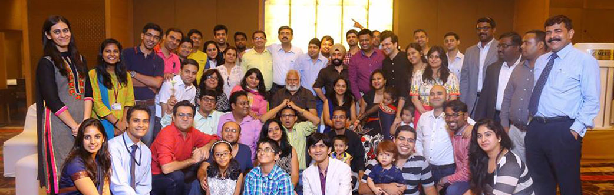<br><br>
                    <h4 class="font-italic mb-4">AIU EQUIVALENCE TO MBA
                    </h4>
                    <p class="font-italic text-muted mb-2">
                        BIMM, BITM, BIIB, BIMHRD from Pune have been granted equivalence to MBA status amongst the PGDM
                        Institutes in Pune. Other than us, Vaikunta Mehta Institute of Management & National Insurance
                        Academy are the only institutes which have received the AIU recognition in Pune.
                    </p>
                    <br>
                    <div class="clearfix" style="overflow-x:auto;margin-bottom: 2%">
                        <p><span class="blue-t">BIMM, BITM, BIIB, BIMHRD from Pune have been granted equivalence to MBA
                                status amongst the PGDM Institutes in Pune. Other than us, Vaikunta Mehta Institute of
                                Management &amp; National Insurance Academy are the only institutes which have received
                                the AIU recognition in Pune. </span></p>
                        <p class="txt6">BIMHRD</p>
                        <table class="table table-bordered">
                            <tbody>
                                <tr>
                                    <th>Sl. No</th>
                                    <th align="left">Course Name </th>
                                    <th>AIU Approval Letter </th>
                                </tr>
                                <tr>
                                    <td>1</td>
                                    <td>POST GRADUATE DIPLOMA IN MANAGEMENT (PGDM)</td>
                                    <td><a target="_blank"
                                            href="http://www.sribalajisocietypune.org/downloads/bimhrd-aiu/PGDM.pdf">Click
                                            Here</a></td>
                                </tr>
                                <tr>
                                    <td>2</td>
                                    <td>POST GRADUATE DIPLOMA IN MANAGEMENT(PGDM-Marketing &amp; Finance)</td>
                                    <td><a target="_blank"
                                            href="http://www.sribalajisocietypune.org/downloads/bimhrd-aiu/Marketing-Finance.pdf">Click
                                            Here</a></td>
                                </tr>
                                <tr>
                                    <td>3</td>
                                    <td>POST GRADUATE DIPLOMA IN MANAGEMENT (PGDM-PM &amp; HRD)</td>
                                    <td><a target="_blank"
                                            href="http://www.sribalajisocietypune.org/downloads/bimhrd-aiu/HR.pdf">Click
                                            Here</a></td>
                                </tr>
                            </tbody>
                        </table>
                        <br>
                        <p class="txt6">BIIB</p>
                        <table class="table table-bordered">
                            <tbody>
                                <tr>
                                    <th>Sl. No</th>
                                    <th align="left">Course Name </th>
                                    <th>AIU Approval Letter </th>
                                </tr>
                                <tr>
                                    <td>1</td>
                                    <td>POST GRADUATE DIPLOMA IN MANAGEMENT (PGDM-International Business)</td>
                                    <td><a target="_blank"
                                            href="http://www.sribalajisocietypune.org/downloads/biib-aiu/IB.pdf">Click
                                            Here</a></td>
                                </tr>
                                <tr>
                                    <td>2</td>
                                    <td>POST GRADUATE DIPLOMA IN MANAGEMENT (PGDM-Marketing)</td>
                                    <td><a target="_blank"
                                            href="http://www.sribalajisocietypune.org/downloads/biib-aiu/IB-Marketing.pdf">Click
                                            Here</a></td>
                                </tr>
                                <tr>
                                    <td>3</td>
                                    <td>POST GRADUATE DIPLOMA IN MANAGEMENT (PGDM-Finance)</td>
                                    <td><a target="_blank"
                                            href="http://www.sribalajisocietypune.org/downloads/biib-aiu/IB-Finance.pdf">Click
                                            Here</a></td>
                                </tr>
                            </tbody>
                        </table>
                        <br>
                        <p class="txt6">BITM</p>
                        <table class="table table-bordered">
                            <tbody>
                                <tr>
                                    <th>Sl. No</th>
                                    <th align="left">Course Name </th>
                                    <th>AIU Approval Letter </th>
                                </tr>
                                <tr>
                                    <td>1</td>
                                    <td>POST GRADUATE DIPLOMA IN MANAGEMENT (PGDM-Telecom)</td>
                                    <td><a target="_blank"
                                            href="http://www.sribalajisocietypune.org/downloads/bitm-aiu/Telecom.pdf">Click
                                            Here</a></td>
                                </tr>
                                <tr>
                                    <td>2</td>
                                    <td>POST GRADUATE DIPLOMA IN MANAGEMENT (PGDM Telecom &amp; Marketing)</td>
                                    <td><a target="_blank"
                                            href="http://www.sribalajisocietypune.org/downloads/bitm-aiu/Telecom-Marketing.pdf">Click
                                            Here</a></td>
                                </tr>
                                <tr>
                                    <td>3</td>
                                    <td>POST GRADUATE DIPLOMA IN MANAGEMENT (PGDM-Marketing &amp; Finance)</td>
                                    <td><a target="_blank"
                                            href="http://www.sribalajisocietypune.org/downloads/bitm-aiu/Marketing-Finance.pdf">Click
                                            Here</a></td>
                                </tr>
                            </tbody>
                        </table>
                        <br>
                        <p class="txt6">BIMM</p>
                        <table class="table table-bordered">
                            <tbody>
                                <tr>
                                    <th>Sl. No</th>
                                    <th align="left">Course Name </th>
                                    <th>AIU Approval Letter </th>
                                </tr>
                                <tr>
                                    <td>1</td>
                                    <td>POST GRADUATE DIPLOMA IN MANAGEMENT (PGDM)</td>
                                    <td><a target="_blank"
                                            href="http://www.sribalajisocietypune.org/downloads/bimm-aiu/PGDM.pdf">Click
                                            Here</a></td>
                                </tr>
                                <tr>
                                    <td>2</td>
                                    <td>POST GRADUATE DIPLOMA IN MANAGEMENT (PGDM-IT &amp; Marketing)</td>
                                    <td><a target="_blank"
                                            href="http://www.sribalajisocietypune.org/downloads/bimm-aiu/IT-Marketing.pdf">Click
                                            Here</a></td>
                                </tr>
                                <tr>
                                    <td>3</td>
                                    <td>POST GRADUATE DIPLOMA IN MANAGEMENT (PGDM-PM &amp; HRD)</td>
                                    <td><a target="_blank"
                                            href="http://www.sribalajisocietypune.org/downloads/bimm-aiu/HR.pdf">Click
                                            Here</a></td>
                                </tr>
                                <tr>
                                    <td>4</td>
                                    <td>POST GRADUATE DIPLOMA IN MANAGEMENT (PGDM-Executive)</td>
                                    <td><a target="_blank"
                                            href="http://www.sribalajisocietypune.org/downloads/bimm-aiu/Executive.pdf">Click
                                            Here</a></td>
                                </tr>
                            </tbody>
                        </table>
                    </div>
                </div>
            </div>
        </div>
    </div>
</div>